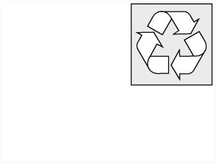

<!DOCTYPE html>
<html>
  <head>
    <title>Removing and Installing/Replacing Water (Coolant) Pump — 2007 BMW X3 3.0si (E83) L6-3.0L (N52K) Service Manual | Operation CHARM</title>
    <meta name='description' content="Detailed repair manual for the 2007 BMW X3 3.0si (E83) L6-3.0L (N52K).">
    <style>
      .li-folder {
	  list-style-image: url('/icons/folder.svg');
      }
      .li-folder.li-folder-open {
	  list-style-image: url('/icons/folder-open.svg');
      }
    </style>
    <link rel='stylesheet' href="../../../../../../style.css">
    <meta name='viewport' content='width=device-width, initial-scale=1.0' />
  </head>
  <body>
    <div class='theme-colors header'>
      <div class='branding'><b>Operation CHARM</b>: Car repair manuals for everyone.</div>
<div class=breadcrumbs><a class='breadcrumb-part' href="../../../../../../">Home</a> <b>&gt;&gt;</b> <a class='breadcrumb-part' href="../../../../../../BMW/">BMW</a> <b>&gt;&gt;</b> <a class='breadcrumb-part' href="../../../../../../BMW/2007/">2007</a> <b>&gt;&gt;</b> <a class='breadcrumb-part' href="../../../../../../index.html">X3 3.0si (E83) L6-3.0L (N52K)</a> <b>&gt;&gt;</b> <a class='breadcrumb-part' href="../../../../../../Repair%2520and%2520Diagnosis/index.html">Repair and Diagnosis</a> <b>&gt;&gt;</b> <a class='breadcrumb-part' href="../../../../../../Repair%2520and%2520Diagnosis/index.html#Engine%2C%20Cooling%20and%20Exhaust/">Engine, Cooling and Exhaust</a> <b>&gt;&gt;</b> <a class='breadcrumb-part' href="../../../../../../Repair%2520and%2520Diagnosis/index.html#Engine%2C%20Cooling%20and%20Exhaust/Engine/">Engine</a> <b>&gt;&gt;</b> <a class='breadcrumb-part' href="../../../../../../Repair%2520and%2520Diagnosis/Engine%252C%2520Cooling%2520and%2520Exhaust/Engine/Water%2520Pump/index.html">Water Pump</a> <b>&gt;&gt;</b> <a class='breadcrumb-part' href="../../../../../../Repair%2520and%2520Diagnosis/Engine%252C%2520Cooling%2520and%2520Exhaust/Engine/Water%2520Pump/index.html#Service%20and%20Repair/">Service and Repair</a> <b>&gt;&gt;</b> <a class='breadcrumb-part' href="../../../../../../Repair%2520and%2520Diagnosis/Engine%252C%2520Cooling%2520and%2520Exhaust/Engine/Water%2520Pump/Service%2520and%2520Repair/Removing%2520and%2520Installing%252FReplacing%2520Water%2520%2528Coolant%2529%2520Pump/index.html">Removing and Installing/Replacing Water (Coolant) Pump</a></div></div>
<div class='main'>
<h1>Removing and Installing/Replacing Water (Coolant) Pump</h1><br><br><br><b>11 51 000 Removing and installing/replacing water pump (N52K)</b><br><br><div class='oxe-image'></div><br><br><br><br><span class='indent-2'>&#09;</span><b>Warning!<br><span class='indent-5'>&#09;</span>Danger of scalding!<br><span class='indent-5'>&#09;</span>Only perform this work after engine has cooled down.</b><br><br><div class='oxe-image'></div><br><br><br><br><span class='indent-2'>&#09;</span><b>Recycling:</b><br><span class='indent-5'>&#09;</span>Catch and dispose of drained coolant in a suitable container.<br><span class='indent-5'>&#09;</span>Observe country-specific waste-disposal regulations.<br><br><div class='oxe-image'></div><br><br><br><br><span class='indent-2'>&#09;</span><b>Important!<br><span class='indent-5'>&#09;</span>If a water pump that has already been operated is reused, it must be filled with coolant immediately after removal.<br><br><span class='indent-5'>&#09;</span>Mixture ratio, water: coolant = 1 : 1<br><span class='indent-5'>&#09;</span>Protect plug connections against coolant and contamination.<br><span class='indent-5'>&#09;</span>Cover plug connections with suitable materials.</b><br><br><div class='oxe-image'></div><br><br><br><br><span class='indent-2'>&#09;</span><b>Important!<br><span class='indent-5'>&#09;</span>Aluminium-magnesium materials.<br><span class='indent-5'>&#09;</span>No steel screws/bolts may be used due to the threat of electrochemical corrosion.<br><span class='indent-5'>&#09;</span>A magnesium crankcase requires aluminium screws/bolts exclusively.<br><span class='indent-5'>&#09;</span>Aluminium screws/bolts must be replaced each time they are released.<br><span class='indent-5'>&#09;</span>Aluminium screws/bolts are permitted with and without colour coding (blue).<br><span class='indent-5'>&#09;</span>For reliable identification:<br><span class='indent-5'>&#09;</span>Aluminium screws/bolts are not magnetic.<br><span class='indent-5'>&#09;</span>Jointing torque and angle of rotation must be observed without fail (risk of damage).</b><br><br><div class='oxe-image'></div><br><br><br><br><span class='indent-2'>&#09;</span><b>Necessary preliminary tasks:</b><br><span class='indent-2'>&#09;</span>^<span class='indent-5'>&#09;</span>Remove coolant thermostat<br><span class='indent-2'>&#09;</span>^<span class='indent-5'>&#09;</span>Remove front right cross strut ( E89 only )<br><br><div class='oxe-image'></div><br><br><br><br><span class='indent-2'>&#09;</span>Loosen hose clamps (1).<br><br><span class='indent-2'>&#09;</span>Remove coolant hose.<br><br><span class='indent-2'>&#09;</span>Tightening torque 11 53 5AZ.<br><br><span class='indent-2'>&#09;</span>Unfasten hose clip (2).<br><br><span class='indent-2'>&#09;</span>Remove coolant hose.<br><br><span class='indent-2'>&#09;</span>Tightening torque 11 53 3AZ.<br><br><span class='indent-2'>&#09;</span>Disconnect plug connection (4).<br><br><span class='indent-2'>&#09;</span>Release screws (3).<br><br><span class='indent-2'>&#09;</span>Tightening torque 11 53 1AZ.<br><br><span class='indent-2'>&#09;</span>Release screws (5).<br><br><span class='indent-2'>&#09;</span>Tightening torque 11 51 1AZ.<br><br><span class='indent-2'>&#09;</span><b>Installation:</b><br><span class='indent-2'>&#09;</span>Replace aluminium screws.<br><br><span class='indent-2'>&#09;</span><b>Installation:</b><br><span class='indent-2'>&#09;</span>If the electric water pump is reused, it must be rotated one turn due to the breakaway torque at the blade wheels.<br><br><div class='oxe-image'></div><br><br><br><br><span class='indent-2'>&#09;</span>Assemble engine.<br><br><span class='indent-2'>&#09;</span>Venting instructions must be observed without fail.<br><br><div class='oxe-image'></div><br><br><br><div class='oxe-image'></div><br><br><br><h3>��:</h3><div class='oxe-image'></div><br><br><br><div class='oxe-image'></div><br><br><br></div>
<div class="theme-colors footer">
  <i>pro multis</i> · <a href="/about.html">About Operation CHARM</a>
</div>
<script>const baseUrl="/"</script>
<script src="../../../../../../script.js"></script>
</body>
</html>
